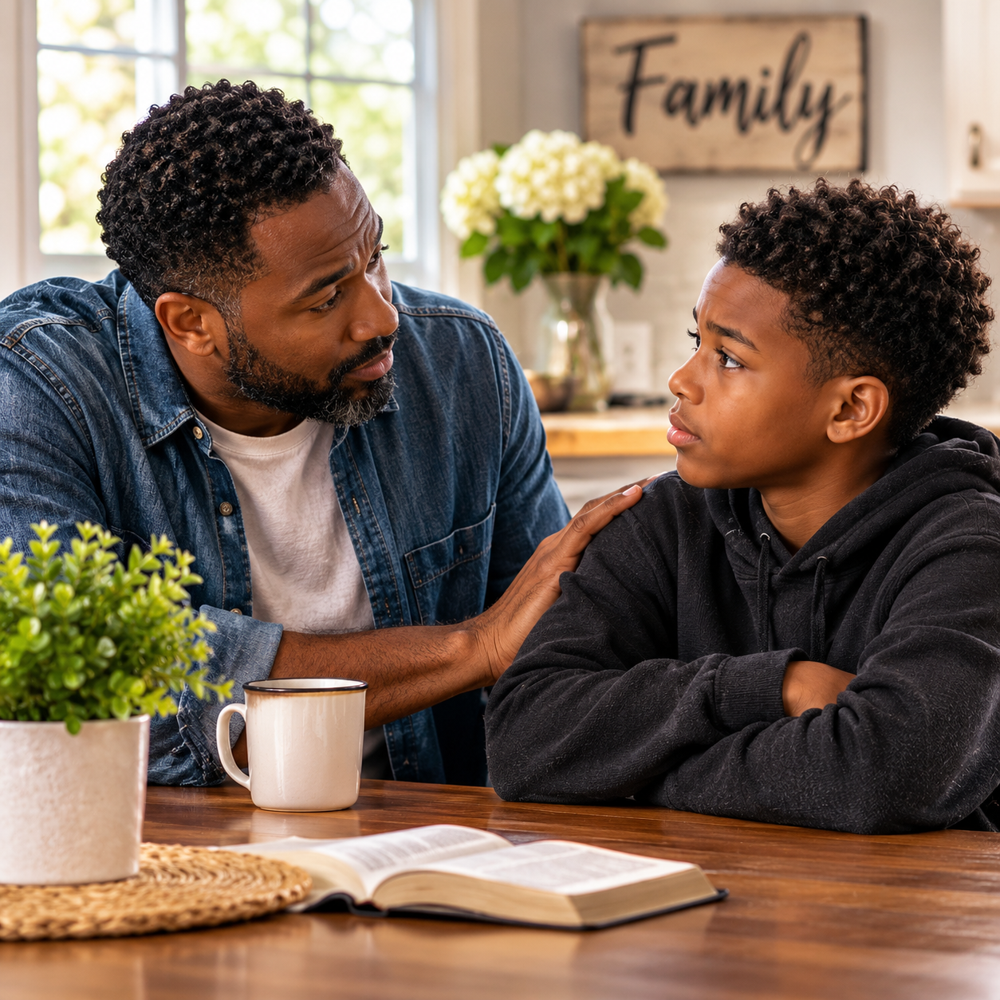

Chapter 20
The Weight of Unforgiveness in Relationships
When Unresolved Wounds Begin to Shape the Way We Love
Key Scriptures: Ephesians 4:31–32; Colossians 3:12–14; Proverbs 17:9; Matthew 18:21–35; James 1:19–20; Romans 12:9–18; 1 Corinthians 13:4–7; Psalm 147:3.
When Yesterday Begins Speaking Through Today’s Relationships
One of the most painful consequences of betrayal is that the wound rarely remains confined to the relationship in which it began. A person may hurt you in one season of your life, yet the effects of that experience can follow you into conversations, friendships, family relationships, marriage, ministry, and every new connection you attempt to build. The person who wounded you may no longer be present, but the fear they awakened can continue influencing how you respond to people who have never harmed you.
You may find yourself becoming defensive when someone asks a reasonable question because, in the past, questions were used to criticize or control you. You may withdraw when a disagreement begins because earlier disagreements ended in rejection. You may struggle to believe an apology because someone once apologized repeatedly without changing their behavior. You may interpret a delayed response as evidence that you are no longer wanted, or you may become uncomfortable when someone offers kindness because you have learned to associate closeness with eventual disappointment.
Sometimes these reactions develop so gradually that we do not recognize how much our past has begun shaping our present. We tell ourselves that we are simply being careful, protecting our peace, or refusing to be hurt again, and there may be truth in those explanations. Discernment is necessary, boundaries are appropriate, and not every relationship deserves the same degree of access. Yet there is a difference between responding wisely to the character of the person before us and reacting primarily to the memory of someone who came before them.
Unforgiveness can complicate that distinction. When an offense remains unresolved within us, we may begin carrying its emotional weight into relationships that were never responsible for the original injury. A spouse may receive the suspicion that belongs to a former partner. A friend may be punished for the betrayal of another friend. A child may experience the anger that originated in an adult’s unresolved pain. A church member may become the target of distrust because someone else once used spiritual authority in a harmful way.
This does not mean that every relationship problem is caused by unforgiveness, nor does it mean that wounded people are responsible for the harm others have inflicted upon them. Relationships can be difficult for many reasons, including incompatible expectations, repeated misconduct, poor communication, unequal responsibilities, and genuine violations of trust. Sometimes the healthiest response is to establish a boundary or step away from a relationship that remains harmful.
But we must be willing to examine the places where an old wound has begun influencing a new conversation, where the desire to avoid pain has become a pattern of emotional distance, or where our need to protect ourselves has made it difficult for others to experience the love we genuinely desire to give.
God did not call us to a life in which every relationship is guaranteed to succeed. He called us to become people whose character increasingly reflects His truth, mercy, patience, and wisdom. That transformation includes learning how to address offense without allowing it to become the governing principle of every relationship we enter.
Forgiveness does not guarantee that every relationship will survive, and it does not require you to remain in a damaging situation. Instead, forgiveness gives you an opportunity to stop allowing an offense to determine who you become, how you treat others, and what you believe is possible in the relationships that remain before you.
The question is not simply whether you have forgiven the person who hurt you. The question is whether the unresolved effects of that hurt are still speaking through you when you interact with the people you love.
The Offense That Follows You Into the Room
Every relationship carries the possibility of misunderstanding. People have different communication styles, emotional needs, expectations, and ways of expressing concern. Even those who love each other deeply will sometimes say something poorly, forget an important detail, disappoint one another, or misunderstand what was intended.
Healthy relationships require the ability to address these moments without immediately treating them as evidence that love has disappeared. However, when betrayal has shaped our expectations, an ordinary disagreement can feel like the beginning of another devastating experience.
Imagine someone who was repeatedly dismissed whenever they tried to explain their feelings. Years later, a new friend asks them to clarify something they said. Instead of recognizing an opportunity for understanding, they feel accused and begin defending themselves. The friend becomes confused because the conversation was never intended to be an attack. What began as a simple question becomes an argument, and both people leave feeling misunderstood.
Or consider a person who was abandoned without warning by someone they deeply trusted. In a later relationship, their partner needs time alone after a difficult day. The request may be reasonable, but the wounded person experiences it as rejection. They may demand reassurance, become angry, withdraw first, or interpret the need for space as proof that the relationship is failing.
These reactions do not necessarily mean the person is intentionally trying to hurt anyone. Sometimes the heart learns to recognize danger so quickly that it begins responding before the present situation has been fully understood. The difficulty arises when every uncomfortable moment is interpreted through the same old story.
Proverbs 4:23 teaches us to guard our hearts because the issues of life flow from them. Guarding the heart involves more than preventing other people from getting close enough to hurt us. It also requires examining what our hearts have learned to expect, what fears influence our interpretations, and whether our responses are consistent with the truth of the present situation.
A guarded heart can become wise, but it can also become so defensive that love struggles to enter. A person can be so determined never to experience rejection again that they begin rejecting others before those people have had a fair opportunity to demonstrate their character.
The work of healing includes learning to pause long enough to ask whether the present moment actually resembles the past or whether an old wound has simply been awakened by a familiar feeling.
You may need to say, “That conversation brought up something painful for me, and I need a moment to understand why I am reacting so strongly.” You may need to explain that a particular tone or behavior reminds you of an earlier experience, while remaining open to the possibility that the person before you intended something different. You may need support in learning how to regulate your response before attempting to resolve the disagreement.
Such honesty does not make you weak. It gives you an opportunity to respond to the person in front of you rather than allowing an absent person from your past to determine the direction of the conversation.
An old wound may explain why a moment feels threatening, but it does not automatically prove that the person standing before you is a threat.
When Pain Becomes a Pattern of Communication
Unresolved offense can influence not only what we believe about people, but also how we communicate with them. When hurt remains unaddressed, we may begin relying on patterns that once helped us survive difficult relationships but now prevent healthy connection.
Some people respond to pain by becoming silent. They stop explaining what bothers them because earlier attempts to speak were met with criticism, dismissal, or punishment. They may insist that nothing is wrong while quietly withdrawing affection and accumulating resentment. Eventually, the other person senses the distance but cannot understand what caused it, because the original concern was never discussed openly.
Others respond by speaking constantly about the offense but never allowing the conversation to move toward resolution. Every disagreement becomes another opportunity to revisit the entire history of the relationship. Old mistakes are introduced into unrelated discussions, apologies are repeatedly questioned, and the present conflict becomes inseparable from every disappointment that came before it.

Still others use sarcasm, criticism, threats of departure, emotional withdrawal, or public embarrassment to communicate pain indirectly. They may tell themselves that the other person should already know what they did wrong, or that withholding affection is justified because they have been hurt. Yet indirect punishment rarely creates the understanding or security that the wounded person actually needs.
James 1:19–20 instructs believers to be quick to listen, slow to speak, and slow to become angry, reminding us that human anger does not produce the righteousness God desires. This passage does not require people to suppress anger or remain silent about wrongdoing. Rather, it calls us to exercise enough restraint to hear what is being said, consider the situation carefully, and choose a response that is not governed entirely by the intensity of our emotions.
Healthy communication does not mean that every conversation will remain calm or that difficult truths must be softened until they lose their meaning. There are moments when a direct statement is necessary, particularly when a boundary has been violated or harmful behavior must stop. The goal is not to avoid discomfort but to address the real issue without deliberately inflicting additional injury.
Instead of saying, “You always do this because you never cared about me,” a person might explain, “When this happened, I felt dismissed, and I need us to discuss how we can handle this differently.” The second statement does not guarantee a positive response, but it identifies the behavior and invites a more focused conversation without claiming to know the other person’s entire character or motive.
Likewise, instead of using silence to punish someone, a person might say, “I am too upset to have this conversation constructively right now. I need some time, and I will return to the discussion when I can speak more clearly.” This communicates a limit without using uncertainty as a weapon.
Of course, communication cannot repair a relationship when one person consistently refuses responsibility or uses honest conversations as opportunities for intimidation. In such circumstances, boundaries and outside support may be necessary. The responsibility for another person’s misconduct belongs to that person, not to the individual trying to communicate more effectively.
Nevertheless, each of us can examine whether our own communication is helping address the wound or unintentionally keeping it alive. Healing does not mean becoming incapable of anger. It means learning how to express anger without surrendering our integrity, how to state a concern without attacking a person’s worth, and how to listen without assuming that every difficult statement is an attempt to harm us.
When We Punish People for What Someone Else Did
One of the most difficult realities of betrayal is that it can make trust feel dangerous even when a new relationship gives us reasons to hope. After being deceived, we may begin searching for signs that everyone else is capable of the same behavior. We watch closely for inconsistencies, interpret uncertainty suspiciously, and assume that affection may be nothing more than a temporary stage before disappointment arrives.
Discernment is necessary, but suspicion can become exhausting when it is no longer guided by evidence or the actual behavior of the person before us.
Consider the person who was repeatedly lied to in a previous relationship. In a new friendship, they may feel compelled to verify every detail, question ordinary changes in plans, or interpret a forgotten message as proof of dishonesty. The new friend may attempt to offer reassurance, but reassurance never lasts because the underlying fear is not entirely about the current relationship. It is also about the earlier experience that taught the wounded person to expect deception.
The original betrayal was real, and the fear may be understandable. Yet the new friend did not commit the original offense. If the new relationship is continually required to answer for another person’s choices, the wounded individual may unintentionally recreate the very distance they fear.
Romans 12:10 calls believers to show genuine love and to honor one another. Such love does not require blind trust or the abandonment of good judgment. It does, however, challenge us to treat people as individuals rather than assigning them the guilt of those who came before them.
This principle is especially important in families. A parent who was betrayed by a former partner may struggle to trust a new partner, and that concern may be understandable. However, if suspicion becomes constant accusation, monitoring, or emotional hostility without evidence of wrongdoing, the new relationship may begin suffering from a history it did not create. Children can also be affected when unresolved adult conflicts shape how they are treated, how they are spoken to, or whether they are expected to take sides.
The same pattern can occur in the Church. Someone who was mistreated by one leader may assume that every leader is manipulative. Someone who experienced rejection in one congregation may expect rejection in every congregation. Their caution may be understandable, and they should never be pressured to return to an unsafe environment. But if they desire to build new relationships, part of the healing process may involve learning to assess each situation on its own evidence rather than assuming every new person will repeat the past.
This does not mean you must ignore warning signs to prove that you have forgiven. If a new person demonstrates dishonesty, coercion, disrespect, or a repeated pattern of harmful behavior, you are right to take that conduct seriously. The distinction is that your decision should be informed by what is actually happening rather than by the assumption that every person will eventually do what someone else did.
You can remain cautious without becoming hostile. You can allow trust to develop gradually. You can ask reasonable questions, observe patterns, and protect your privacy while giving a new relationship the opportunity to demonstrate its character.
Forgiveness begins releasing the past from its authority over your heart, while discernment helps you evaluate the present without pretending that risk does not exist.
The Marriage Between Love and Unforgiveness
Few places reveal the weight of unresolved offense more clearly than a close, ongoing relationship. In marriage, family life, and long-term partnerships, people often encounter one another’s habits, weaknesses, disappointments, and unmet expectations repeatedly. Love creates opportunities for deep connection, but it also creates opportunities for injury because the people closest to us often have the greatest ability to affect our emotions.
When an offense remains unresolved, it can begin shaping the atmosphere of the relationship. A forgotten responsibility may awaken years of resentment about feeling unsupported. A disagreement over money may bring back memories of previous dishonesty. A careless comment may trigger the fear that a partner does not respect or value us. Sometimes the current concern is significant in its own right; at other times, the intensity of the reaction reflects the accumulation of older hurts that have never been addressed.
In either case, a relationship cannot become healthier simply by pretending the history does not exist. If a couple continues repeating the same harmful pattern, forgiveness should not be used to avoid the practical work of understanding what happened and deciding what must change.
Colossians 3:12–14 calls believers to clothe themselves with compassion, kindness, humility, gentleness, patience, and forgiveness, placing love above all these qualities as the bond that brings them together. This passage offers a vision of relationships shaped by grace, but it does not suggest that love requires people to tolerate abuse, coercion, or repeated violations of trust.
Patience is not permission for a person to continue harming their partner. Kindness does not require remaining available for intimidation. Forgiveness does not remove the need for honesty about finances, fidelity, shared responsibilities, or other matters that affect the safety and stability of a relationship.
Where both people are willing to take responsibility, forgiveness can create room for honest conversations and changed behavior. One person may need to acknowledge the impact of their actions, while the other may need to communicate their hurt without using the offense as a permanent weapon. Together, they may need to establish new agreements, repair trust gradually, and seek qualified relationship counseling if the pattern has become difficult to change.
But reconciliation requires participation from both people. One partner cannot single-handedly create a healthy marriage if the other refuses to address harmful behavior. A person may forgive while recognizing that continued closeness is not currently safe or sustainable.
When abuse, threats, or coercive control are present, ordinary communication advice may be inadequate or unsafe. The priority must be safety and appropriate professional assistance, rather than insisting that the person experiencing harm remain in private conversations in the hope that forgiveness will solve the problem.
A healthy understanding of forgiveness allows truth to be spoken and responsibility to be accepted. It does not demand that a wounded person deny the severity of the harm or that an offender be granted unlimited opportunities to repeat it.
For those who are in relationships where repair is possible, however, there is an important question to consider: Are we willing to let an acknowledged offense become part of our history rather than using it as permanent evidence against the person who has taken responsibility and is genuinely working to change?
That question does not apply where harm continues unchecked or where accountability is absent. It applies where the conditions for repair are present and the relationship has an opportunity to move toward something healthier.
Love cannot erase every painful memory, but it can create a new pattern in which honesty, responsibility, and forgiveness shape what happens next.
When Family History Becomes a Cycle of Hurt
Some of the deepest relational patterns are learned long before a person has the language to describe them. A child who grows up in a home where anger is expressed through shouting may learn that disagreement is dangerous. A child whose feelings are routinely dismissed may learn to hide distress until it becomes overwhelming. A child who watches family members use silence, guilt, or humiliation to control one another may come to believe that these behaviors are ordinary features of love.
As adults, people may carry those patterns into their own homes without consciously deciding to repeat them. They may become uncomfortable with vulnerability, struggle to apologize, interpret correction as rejection, or rely on control when they feel uncertain. Others may become excessively accommodating because they learned that keeping everyone else happy was the safest way to maintain connection.
These patterns can be changed, but change begins with recognition. We cannot address what we refuse to acknowledge, and we cannot build a healthier future simply by promising never to behave like the people who hurt us. The old responses may reappear under stress unless we learn new ways to recognize and manage them.
Hebrews 12:15 warns believers to pay attention lest a root of bitterness grow and cause trouble, affecting many people. Although this passage should not be used to blame people for the harm they have suffered, it reminds us that unresolved pain can have consequences beyond the individual who carries it.
A parent’s unresolved anger may influence the emotional climate of a home. A family member’s refusal to address longstanding conflict may divide relatives who were not involved in the original offense. A person who never learned how to apologize may continue creating distance in relationships while believing that admitting fault would make them weak.
The answer is not to condemn ourselves for every pattern we inherited. We did not choose every experience that shaped us, and we are not responsible for the harmful actions of those who came before us. We are, however, responsible for what we choose to do when we recognize that a pattern is affecting our own behavior.
This distinction is important because shame often makes change more difficult. If we conclude that we are hopeless because we resemble someone who hurt us, we may become defensive or give up trying to grow. A more constructive response is to acknowledge the pattern honestly, seek support where needed, and begin practicing different choices.
You may need to learn how to apologize without explaining away the harm. You may need to practice expressing anger without threatening the relationship. You may need to stop using withdrawal as punishment or learn how to ask for reassurance without demanding constant proof of love. You may need counseling to understand how earlier experiences influence your reactions today.
If you are raising children, remember that one of the most powerful ways to change a family pattern is to demonstrate that conflict can be addressed without humiliation, that adults can admit mistakes, and that boundaries can be respected without withdrawing love. Children do not need perfect parents to learn healthier relationships. They need adults who are willing to take responsibility and model repair.
The cycle begins to change when someone becomes willing to say, “This happened in my family, but I do not want to continue repeating it. I may need help learning a different way, and I am willing to begin.”
That decision does not erase the past, but it can change what the next generation experiences.
Forgiveness Does Not Mean Forgetting Your Needs
Sometimes people become so focused on forgiving others that they forget to examine what a healthy relationship actually requires. They become skilled at understanding the other person’s struggles, explaining their behavior, and finding reasons to offer another chance, yet they rarely ask whether their own needs are being heard or whether the relationship allows them to live with dignity and safety.
Compassion is a beautiful quality, but compassion without discernment can become an excuse for neglecting ourselves. We may continue accepting broken promises because we understand the other person’s background. We may tolerate repeated disrespect because we know they have experienced hardship. We may remain silent about our needs because we fear that expressing them will make us appear selfish or unforgiving.
Understanding why someone behaves a certain way can help us respond with greater wisdom, but an explanation is not the same as a justification. A person may have experienced deep pain and still be responsible for how they treat others. Someone may struggle with emotional regulation and still need to take practical steps to prevent their anger from harming the people around them. A person may sincerely desire to change and still require time, support, and accountability before their behavior becomes trustworthy.
Forgiveness does not require you to become the permanent caretaker of another person’s unaddressed wounds. Nor does love require you to abandon your needs so that another person never has to experience discomfort.
Jesus demonstrated compassion throughout His ministry, yet the Gospels also show Him withdrawing to pray, refusing to be controlled by the demands of every crowd, and responding differently according to the circumstances before Him. His compassion was not a surrender of discernment or a willingness to let other people dictate every aspect of His mission.
This example invites us to recognize that care for others and responsibility for our own limits can coexist. You can care about a family member without accepting every demand they make. You can love a friend while acknowledging that a particular pattern of conversation is damaging the relationship. You can forgive a person who repeatedly breaks commitments while deciding what level of responsibility you can safely entrust to them.
Boundaries become especially important when a relationship repeatedly leaves one person carrying the emotional, financial, or practical consequences of the other person’s choices. A boundary may involve limiting a conversation, declining a request, changing an arrangement, or deciding that certain forms of access are no longer appropriate.
The purpose is not to punish the other person into behaving differently. A boundary communicates what you will do to protect your well-being and act responsibly if a particular behavior continues. It does not give you control over the other person’s choices, but it clarifies your own.
If you have spent years believing that love means endlessly accommodating others, you may experience guilt when you begin setting limits. That discomfort does not automatically mean the boundary is wrong. It may mean you are learning to distinguish genuine responsibility from the pressure to keep everyone else comfortable.
You are not required to prove that you have forgiven by making yourself available for every conversation, request, or relationship arrangement. Forgiveness can free you from revenge while wisdom helps you determine what participation in the relationship should look like.
When We Keep Bringing the Offense Back to Life
There is a difference between remembering what happened and using the memory as a permanent weapon. In relationships where both people are trying to repair a genuine offense, repeatedly introducing the same past mistake into every disagreement can make meaningful change almost impossible.
A person may apologize sincerely, accept responsibility, and demonstrate a different pattern over time, yet the old offense is brought forward whenever a new disagreement arises. Instead of addressing the present concern, the conversation returns to a familiar list of failures. The person who made the original mistake may begin to believe that no amount of change will ever matter, while the person who was hurt may feel that keeping the offense visible is the only way to prevent it from being dismissed.
This pattern can arise from fear. The wounded person may worry that if they stop mentioning the offense, the other person will forget its seriousness or repeat the behavior. They may use the memory as a form of protection, believing that constant reminders are necessary to preserve accountability.
There are circumstances in which revisiting the past is necessary. If harmful behavior continues, if an apology was insincere, if trust has not been rebuilt, or if the current disagreement is directly connected to an earlier pattern, the history may need to be discussed. No one should be pressured to treat an ongoing problem as though it has already been resolved.
But when a matter has been addressed, the person responsible has accepted appropriate accountability, and meaningful change is taking place, the relationship needs room to recognize that progress. Otherwise, forgiveness is spoken but never allowed to influence the way the relationship operates.
Proverbs 17:9 teaches that the person who covers an offense seeks love, while repeatedly bringing a matter up can separate close friends. This proverb should not be used to demand secrecy about abuse or serious misconduct. Rather, in the context of ordinary relational offenses and matters that have been responsibly addressed, it reminds us that love sometimes requires knowing when to stop reopening a wound that is already being healed.
The purpose of forgiveness is not to erase history but to prevent history from becoming a weapon that makes every future interaction a trial. When the past is relevant, address it honestly. When accountability is incomplete, acknowledge what remains unresolved. But when a matter has genuinely been repaired, allow the relationship to experience the possibility of a different future.
This also requires responsibility from the person who caused the original harm. They cannot demand that the wounded person stop discussing the offense simply because they have grown tired of hearing about it. They must be willing to listen, recognize the effects of their conduct, and understand that trust may take longer to rebuild than the apology took to offer.
Repair is not achieved by forcing one person to forget or requiring the other to live forever under condemnation. It develops when truth has been acknowledged, responsibility is demonstrated, and both people are willing to practice a healthier way of relating.
When the conditions for repair exist, forgiveness can help a relationship stop repeating yesterday’s argument and begin learning from it.
The Courage to Apologize and the Humility to Receive an Apology
Many relationships remain strained not because the original offense was impossible to address, but because the people involved have become unwilling to approach the conversation with humility. One person waits for an apology that never comes, while the other waits for the injured person to stop being upset. Both may feel justified, and both may believe that the other person should make the first move.
Sometimes the person who caused the harm refuses to acknowledge it. In those circumstances, the injured person cannot manufacture repentance on their behalf, and forgiveness does not require them to pretend that a meaningful repair has occurred.
But there are also situations in which both people contribute to the continuation of the conflict. One may have caused the original injury, while the other has responded with words or actions that created additional harm. Recognizing one’s own responsibility does not cancel the original offense, and acknowledging the original offense does not excuse subsequent wrongdoing.
A sincere apology requires more than saying the right words. It involves acknowledging what happened, taking responsibility without immediately shifting blame, listening to the impact, and making reasonable efforts to repair the harm. When the behavior has become a pattern, meaningful change is more important than another emotional promise.
Receiving an apology also requires wisdom. You do not have to deny your pain or restore trust immediately. You can acknowledge that the apology matters while explaining that the relationship will need time and consistent behavior before it can return to a deeper level of trust. You can appreciate a person’s willingness to take responsibility without promising an outcome you are not ready to offer.
If you discover that your own behavior has caused harm, you can begin by taking responsibility for what belongs to you rather than waiting until the other person admits their mistakes first. Your apology does not mean that the entire conflict was your fault. It means you are willing to address your part honestly.
This kind of humility can interrupt a destructive cycle. Instead of treating every conversation as a contest over who is more wrong, people begin asking what needs to be acknowledged, what can be repaired, and what changes would help prevent the same problem from recurring.
James 5:16 encourages believers to confess their sins to one another and pray for one another. This invitation points toward honesty and mutual care, not coerced disclosure or the demand that a vulnerable person reveal private information to someone who may misuse it. Healthy accountability requires appropriate judgment about whom to trust and what circumstances make a conversation safe.
There are relationships in which direct contact is not wise, especially where abuse, coercion, threats, or ongoing manipulation are involved. In such circumstances, an apology or conversation should not be pursued at the expense of safety. Support from qualified professionals or appropriate authorities may be more suitable than a private meeting.
But where honest conversation is possible, humility can open a door that pride has kept closed for years. Sometimes the first step toward healing is not a dramatic declaration but a sincere acknowledgment that we have caused pain and a willingness to do something different.
We cannot control whether another person will receive our apology, just as we cannot force another person to apologize to us. We can, however, choose to stop using our own pride as an excuse to avoid responsibility.
Learning to Love Without Keeping Score
When relationships have been marked by repeated disappointment, love can begin to feel like an accounting system. We remember who called first, who apologized last, who sacrificed more, who made the greater effort, and who failed to show up when needed. Some of these observations may identify genuine imbalances that deserve attention, particularly when one person consistently carries responsibilities that should be shared.
Yet there is a difference between recognizing an unhealthy pattern and keeping a running record of every offense so that we can prove our superiority in the next argument.
First Corinthians 13:4–7 describes love as patient and kind, not envious or boastful, not easily provoked, and not keeping a record of wrongs. This passage is often quoted at weddings, but its meaning extends far beyond romantic relationships. It challenges every believer to consider whether love is becoming a way of life or merely a word we use when relationships are going well.
Love does not require us to ignore repeated harm. It does not mean we must forget important information about a person’s behavior, surrender our boundaries, or continue investing in a relationship that remains unsafe. Remembering a pattern can be necessary for making wise decisions. The warning against keeping a record of wrongs is not a command to become unaware of reality.
Rather, it challenges the use of past offenses as ammunition in relationships where the purpose of conversation should be understanding, correction, and repair. It calls us to resist the temptation to make another person’s failure the permanent measure of their worth, especially when they have taken responsibility and are making a sincere effort to change.
Keeping score can also prevent us from examining our own conduct. When we become preoccupied with proving how much another person has failed, we may become less willing to acknowledge the ways our own responses have contributed to the conflict. We begin to measure the relationship by who owes whom rather than asking what integrity and mutual responsibility require now.
A healthier approach does not deny the imbalance. It names it clearly. If one person is carrying too much responsibility, the issue should be discussed. If promises are repeatedly broken, the pattern should be addressed. If the relationship has become one-sided, boundaries may be necessary. But the goal is to respond to the pattern constructively rather than to use every past failure as evidence that the other person is incapable of growth.
When love and forgiveness are practiced together, we learn to recognize the difference between a person who is imperfect but willing to grow and a person who repeatedly causes harm without accepting responsibility. Both situations require discernment, but they do not require identical responses.
Love does not make us blind to character. It helps us respond to character with truth, humility, and appropriate boundaries rather than contempt.
A Prophetic Call to the Church: Stop Passing the Wound Around
The Church is made up of people who are still growing, still learning, and still in need of grace. That reality should create humility, patience, and a willingness to repair relationships when harm occurs. Instead, some congregations develop patterns in which offense travels from person to person, conflict becomes a source of division, and private disappointments eventually shape the atmosphere of an entire community.
A disagreement between two members may become a series of conversations with everyone except the person involved. A leader may respond defensively to a question, leaving the person who raised it feeling dismissed. A member may become so wounded by the experience that they withdraw from others, while the people around them interpret the withdrawal as hostility. Before long, a conflict that might have been addressed through a fair and careful process has become a collection of assumptions, alliances, and unresolved grievances.
Not every conflict can or should be resolved through a private conversation. Serious misconduct, abuse, threats, and safeguarding concerns may require formal procedures or outside authorities. But many relational injuries become more difficult to address because people avoid appropriate conversations, spread unverified information, or assume the worst about one another’s intentions.
The Church must become more intentional about how it handles these situations. Members should be encouraged to communicate honestly and respectfully. Leaders should be willing to receive concerns without treating every question as rebellion. Confidentiality should protect appropriate privacy rather than conceal wrongdoing. When formal complaints are necessary, established procedures should be followed fairly, and retaliation against those who raise concerns should not be tolerated.
Forgiveness must never become a tool for forcing people to reconcile before a serious issue has been addressed. Nor should accountability become an excuse for public humiliation or the assumption that every allegation is proven. A healthy church makes room for both mercy and careful examination, recognizing that the pursuit of truth requires integrity from everyone involved.
Leaders also have a responsibility to model what repair looks like. When they speak harshly, make mistakes, or mishandle a situation, they should be willing to acknowledge the impact of their actions and accept appropriate correction. Authority does not eliminate the need for humility. In fact, greater influence increases the importance of responsible conduct because a leader’s choices can affect many people.
Members, too, must examine how they respond when they feel overlooked, disappointed, or misunderstood. It is possible to raise legitimate concerns in a way that remains truthful and respectful, and it is possible to damage others through gossip even when the original grievance is real. A wounded person deserves care, but their pain does not make every response automatically wise.
The prophetic call is for the Church to stop normalizing relational harm and stop treating unresolved conflict as an unavoidable part of ministry. We cannot expect people to grow in love while creating environments where honest concerns are punished, apologies are avoided, and forgiveness is preached without practical accountability.
The Church should be a place where people learn how to disagree without dehumanizing one another, how to correct without humiliating, how to apologize without evading responsibility, and how to forgive without denying the truth.
If we desire unity, we must stop confusing unity with silence. If we desire spiritual maturity, we must allow correction to reach our own lives. If we desire to demonstrate the love of Jesus, we must consider not only what we preach from the pulpit but also how we treat the people sitting beside us.
A congregation’s witness is strengthened when its members demonstrate that conflict can be addressed with integrity and that relationships can be repaired without sacrificing truth.
Conclusion: Do Not Let the Wound Decide How You Love
Unforgiveness can become a heavy burden because it rarely remains limited to the memory of one offense. If left unexamined, it can influence our expectations, shape our communication, distort our interpretations, and create distance in relationships that have the potential to become meaningful and healthy. We may begin protecting ourselves from the possibility of future pain by withholding the very openness, kindness, and trust that allow relationships to grow.
But the answer is not to abandon discernment or force ourselves to trust people who have not demonstrated that they are trustworthy. The answer is to become increasingly able to distinguish the past from the present, to recognize the difference between a reasonable boundary and a defensive reaction, and to respond to the people before us according to truth rather than fear alone.
You may need to forgive someone who never apologizes. You may need to establish limits with a person who continues to behave harmfully. You may need to grieve a relationship that cannot be restored, seek help in understanding the effects of earlier experiences, or learn how to communicate feelings that you have spent years suppressing. None of these steps requires you to deny what happened.
If a relationship is safe and both people are willing to accept responsibility, forgiveness can create space for meaningful repair. It can help you stop using old mistakes as permanent weapons and begin building a new pattern of honesty, humility, and mutual care. But if the relationship remains harmful, forgiveness may mean releasing personal vengeance while maintaining distance and seeking appropriate protection.
The freedom of forgiveness is not that everyone will remain in your life. It is that the people who hurt you do not have to determine the character you carry into every relationship that follows.
You can learn to speak without attacking, listen without immediately defending yourself, apologize without making excuses, and receive an apology without pretending that trust has been restored overnight. You can allow new people to demonstrate their character without demanding that they answer for the choices of those who came before them. You can recognize that an uncomfortable conversation is not always a threat and that a healthy boundary is not the same as a refusal to love.
You will not master every one of these practices in a single day. Some patterns have been learned over many years, and changing them may require patience, support, prayer, and professional guidance. Give yourself room to grow without using your past as an excuse to remain unchanged.
At the same time, remember that you are not responsible for repairing every relationship alone. Love requires mutual responsibility, and reconciliation cannot be forced into existence by one person’s willingness to forgive. If another person continues to deny wrongdoing, violate boundaries, or place you in danger, you may need to change the nature of your involvement or step away entirely.
The goal is not to preserve every relationship at any cost. The goal is to become a person who can love with wisdom, forgive with integrity, and recognize when a relationship can be repaired and when distance is necessary.
Let the Lord examine the places where yesterday is still influencing today. Let Him teach you how to carry the lessons of your experiences without carrying every burden they created. Let Him help you recognize the difference between remembering a wound and allowing that wound to govern the way you treat others.
You cannot change the person who wounded you in the past, but with God’s help, you can refuse to let that person’s actions become the pattern through which you wound others in the future.
CHAPTER 20 STUDY GUIDE
Continue Your Study
Open the companion guide for discussion questions, personal reflection, and prayer connected to this chapter.
Open Chapter 20 Study Guide →
CHAPTER 20 STUDY GUIDE
Continue Your Study
Open the companion guide for discussion questions, personal reflection, and prayer connected to this chapter.
Open Chapter 20 Study Guide →